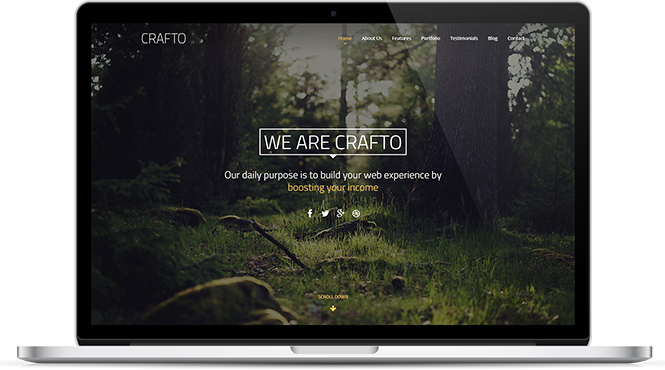

Slider HELLO We are Crafto, a young team of design and photography professionals. You can find us on our social profiles or you can say Hello using our contact page. Contact Us We realy like to: Design… Code… and Release Get a Quote 